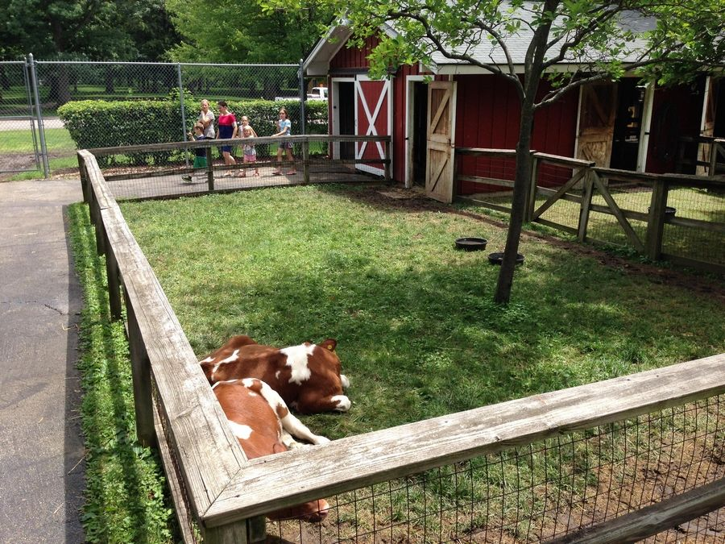
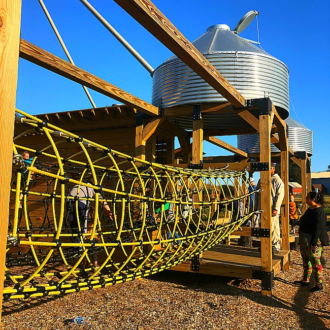

Farm Zoo
At our farm you will find a heap of attractions such as a Farm animal zoo, a lovely cafe, and a playground for the little ones. Come and visit us today! We have 13+ species of Farm animals. It is a perfect opportunity to seize the day and turn it into an opportunity to learn something new. Our animals are extremely friendly and gentle and are adequetelly supervised and looked after. You will also have the opportunity to sit on a real tractor, milk a life-sized model milking cow, play with diggers in our sandpit and get creative at our colouring station. Calming walks are also greatly encouraged for those who enjoy a making the most of sunny days!